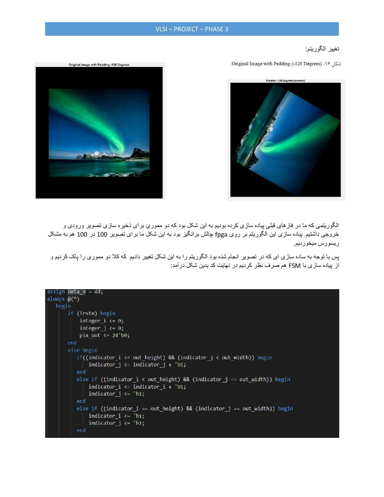
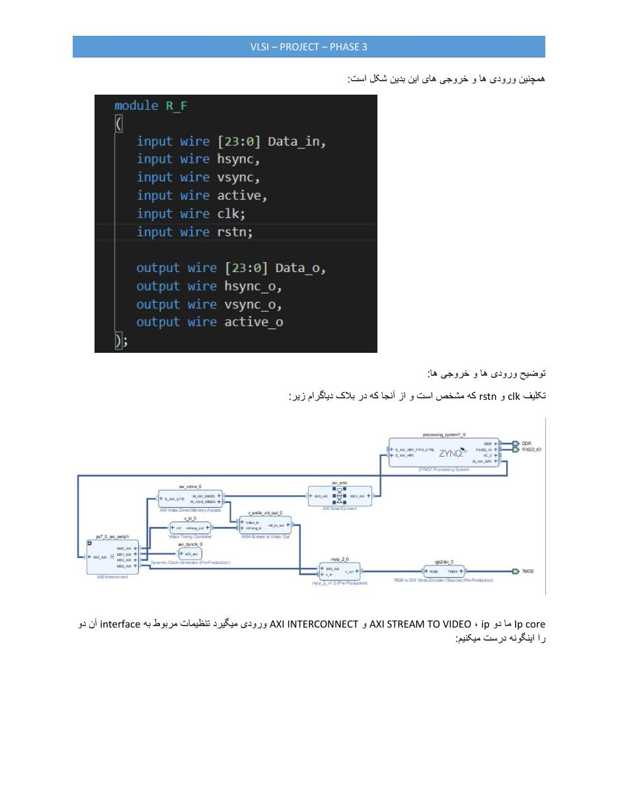
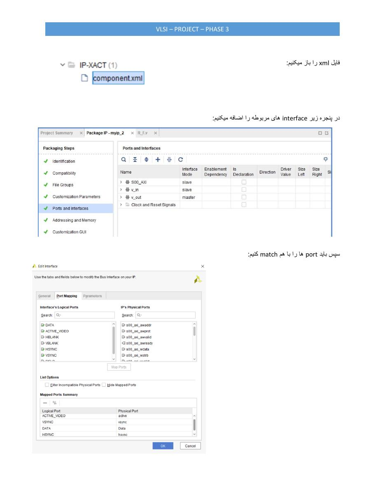
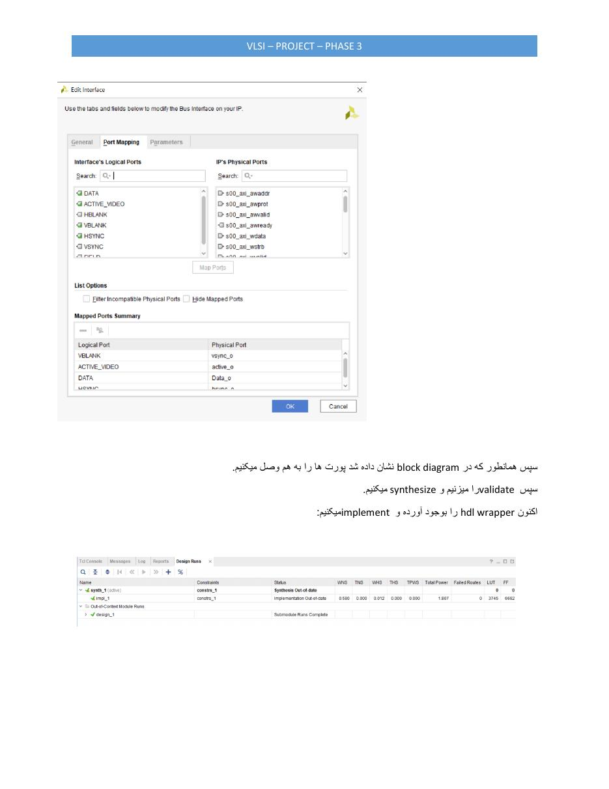
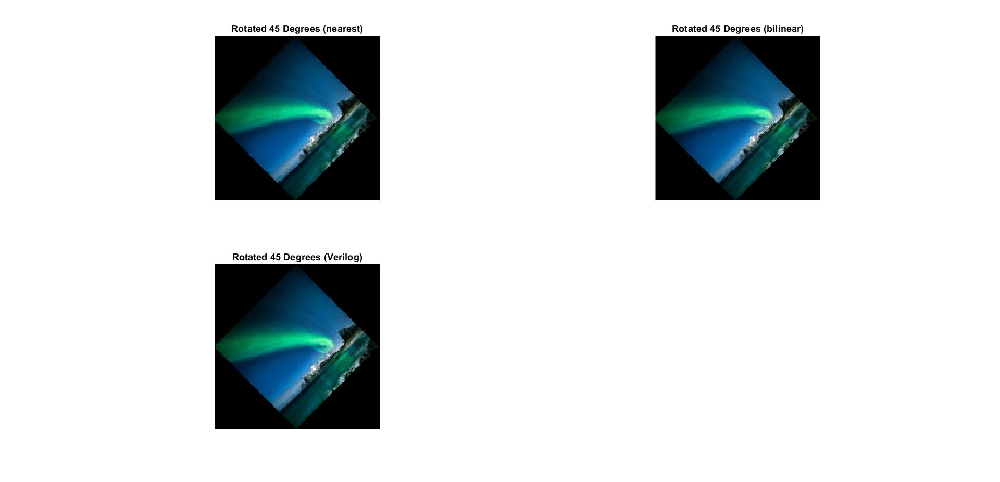
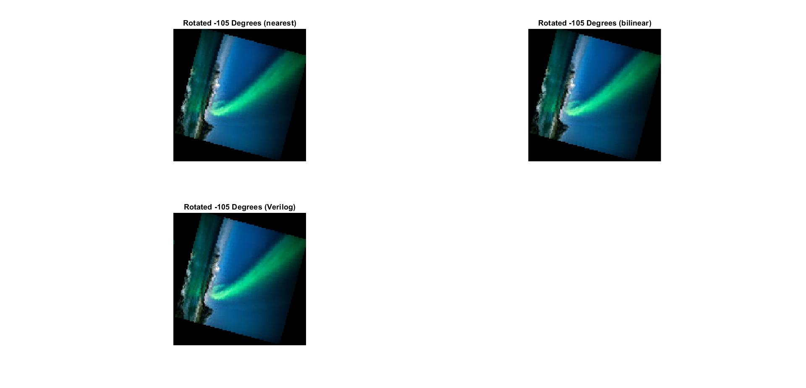
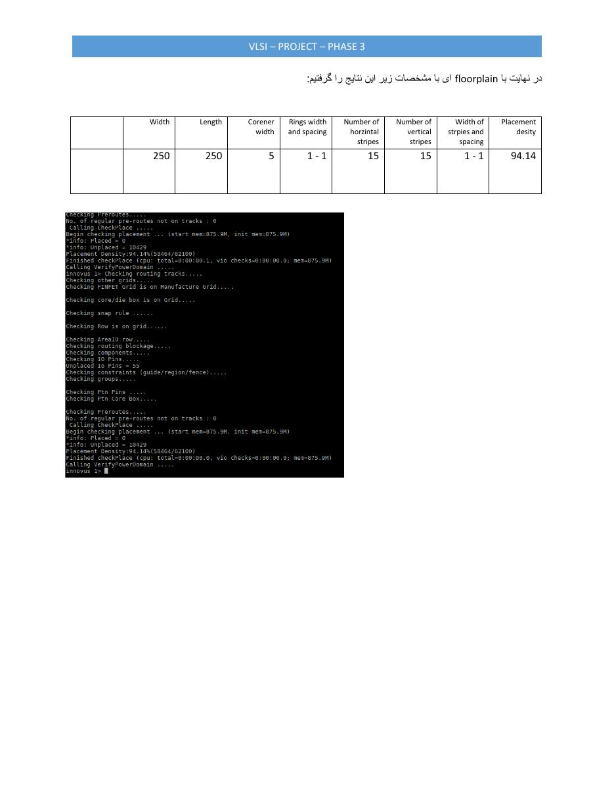
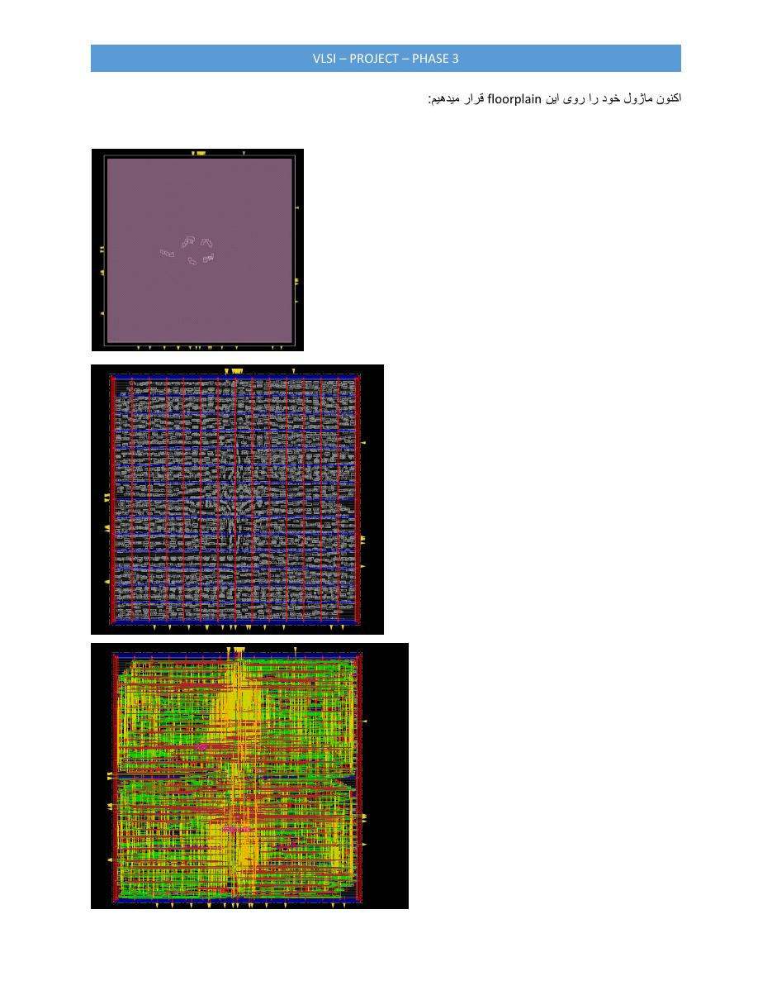

A fixed-point, 24-bit RGB image-rotation engine developed from MATLAB reference model to Verilog verification, Zynq implementation, and an exploratory ASIC place-and-route flow.
Scope. Team project with Amirreza Imani. My contribution spans algorithm development, RTL and testbench work, FPGA integration, hardware implementation, and ASIC-flow evaluation.
The accelerator accepts a stream of 24-bit RGB pixels, rotates the image by a user-controlled angle, expands the output canvas so the corners are not cropped, and emits the result as a new pixel stream. Width, height, maximum canvas size, and initial angle are parameterized in the RTL.
Rotation uses inverse coordinate mapping: each output location is mapped back into the source image. This avoids holes that occur with forward mapping and makes the selected interpolation policy explicit.
Core engineering trade-off. Bilinear interpolation improved visual quality, while nearest-neighbor interpolation substantially simplified the hardware data path. Both were modeled; the RTL comparison used the nearest-neighbor reference.
Trigonometric values are stored in signed fixed-point lookup tables covering -180° to +180°. The input controls increment or decrement the angle and trigger a new frame.
MATLAB established canvas dimensions, fixed-point trigonometry, and nearest/bilinear interpolation outputs.
A Verilog state machine sequenced frame capture, rotation, and streaming output with explicit valid signals.
The custom IP was packaged for AXI-based Zynq integration alongside memory, debug, and video-path blocks.
The original ImageRotation RTL is parameterized by input width, height, maximum output canvas, and initial angle. It separates each 24-bit input into 8-bit red, green, and blue channels, then reconstructs the output word after coordinate mapping.
A nine-state controller handles reset, frame-size capture, trigonometric lookup, header detection, pixel reception, rotation, and output streaming. Signed sine and cosine values are loaded from fixed-point LUTs. For every output coordinate, the datapath subtracts the image center, applies the inverse rotation matrix, restores the source-image offset, and selects the nearest valid source pixel.
The later Phase 4 revision converted the core into a direct video-path block with 24-bit data, HSYNC, VSYNC, active-video, clock, and reset signals. Removing full-frame input/output memories reduced the resource bottleneck and made the core easier to place between the video DMA and AXI4-Stream-to-Video blocks.


File-driven testbenches supplied RGB pixels and compared every emitted channel against the MATLAB result. A one-code difference was classified as a rounding warning; larger mismatches were errors.
| Test angle | Reference outputs | RTL evidence |
|---|---|---|
| +45° | Nearest + bilinear | Pixel comparison + waveforms |
| +120° | Nearest + bilinear | Generated output |
| -28° | Nearest + bilinear | Generated output |
| -105° | Nearest + bilinear | Generated output |
The RTL was packaged in Vivado as a custom IP block. Its physical ports were mapped to video-bus signals, including pixel data, active video, horizontal sync, and vertical sync. The block design connected the core to the Zynq processing system, AXI interconnect, video DMA, timing controller, AXI4-Stream-to-Video output, clocking, and HDMI output path.
Integration followed the complete Vivado flow: configure and map the interfaces, validate the block design, synthesize the IP and wrapper, generate the HDL wrapper, implement the design, and verify timing and resource reports. The resulting Phase 4 hardware implementation operated successfully; the local report directory contains an older progress copy that predates the final result.




The routed Vivado 2017.4 design targets an XC7Z010-2 device. The system wrapper includes the processing system, memory/video infrastructure, custom logic, and integrated debug support.
| Routed metric | Result | Interpretation |
|---|---|---|
| Clock | 50 MHz | All constraints met |
| Setup / hold WNS | 11.469 ns / 0.053 ns | 0 failing endpoints |
| Slice LUTs | 3,775 / 17,600 | 21.45% |
| Slice registers | 5,723 / 35,200 | 16.26% |
| Block RAM tiles | 8 / 60 | 13.33% |
| DSP blocks | 0 / 80 | No DSP dependency |
| Estimated power | 0.767 W | 0.662 W dynamic |
Power confidence is reported as medium because no simulation activity file was supplied.
The same RTL was synthesized in Synopsys Design Vision and taken into Cadence Innovus for floorplanning and placement.
Qualification. The ASIC numbers are exploratory implementation evidence, not signoff results: the report states that clock, area, and power constraints were not fully defined. They are useful for exposing the design's memory-driven cost and guiding the next architecture revision.
Design Vision compiled the Verilog into a gate-level netlist with a reported cell area of 58,464 µm². That netlist and the technology LEF were imported into Innovus. Several floorplans were evaluated before selecting a 250 × 250 µm core with 5 µm margins.
The power-delivery network uses VDD/VSS rings with 1 µm width and spacing, plus 15 horizontal and 15 vertical stripes. Placement reached the reported 94.14% density. Innovus then placed the standard cells, checked the floorplan and power domain, and completed trial routing to expose congestion, metal-length, and via-count information.


Algorithmic behavior and RTL output were validated against MATLAB, the FPGA system routed with timing met, and the Phase 4 implementation successfully carried the image-rotation core into the Zynq video path. The design also progressed through synthesis, floorplanning, placement, and routing exploration in the ASIC toolchain.
The most important architectural improvement was replacing the original dual-frame-memory structure and large controller with a lighter streaming video implementation. This reduced local storage and control overhead while preserving the 24-bit RGB video interface and rotation behavior.
Replace full-frame storage with line buffers or tiles to bound BRAM use as image dimensions scale.
Decouple coordinate generation, memory fetch, interpolation, and output buffering for predictable throughput.
Add AXI4-Stream protocol assertions and an automated hardware loopback test before HDMI integration.
{kind=link}
{kind=link}
{kind=link}
{kind=link}
{kind=link}
{kind=link}